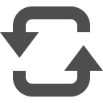

U Harfi ile Başlayan Almanca Kelimeler
ufer
????
kıyı, sahil, kenar
U 1/115


U harfi için çözdüğünüz toplam kelime sayısı:
- (das) ufer / kıyı, sahil, kenar
- (das) unglück / felaket, facia, talihsizlik
- (das) unrecht / haksızlık
- (das) unterhemd / fanila, atlet
- (das) unternehmen / girişim, kuruluş
- (das) urteil / yargı, hüküm
- (der) umfang / hacim, kapsam, alan
- (der) umsatz / satışlar, ciro
- (der) umzug / alay, kortej, taşınma, göç
- (der) unfall / kaza
- (der) unsinn / saçmalık, zirva
- (der) unternehmer / girişimci, işveren
- (der) unterricht / öğretim, ders
- (der) unterschied / fark, ayrım
- (der) urlaub / tatil, izin
- (der) ursprung / köken, kaynak
- (die) uhr / saat
- (die) umfrage / soruşturma, anket
- (die) umgebung / çevre, civar
- (die) umleitung / başka yöne çevirme, yönlendirme
- (die) umwelt / çevre
- (die) uniform / üniform
- (die) universität / üniversite
- (die) unterhaltung / konuşma, söyleşi, sohbet
- (die) unterhose / külot
- (die) unterschrift / imza
- (die) unterstützung / destek, yardım
- (die) untersuchung / inceleme, araştırma
- (die) unterwäsche / iç çamaşırı
- (die) urkunde / belge, vesika, sertifika
- (die) ursache / neden, sebep
- um / etrafında, hakkında, konusunda
- umfassen / kapsamak, sarılmak, kucaklamak
- umgekehrt / tersine
- umsonst / parasız, bedava, boşuna
- umsteigen / taşıtla aktarma yapmak
- umstritten / tartışmalı
- umweltfreundlich / çevre dostu
- unabhängig / bağımsız
- unbedingt / kayıtsız şartsız, kesinlikle
- unbekannt / bilinmeyen, tanınmayan
- unbequem / rahatsız
- unbestimmt / belli belirsiz
- unbewusst / bilinçsiz, şuursuz
- und / ve
- undankbar / nankör
- undeutlich / belirsiz, karışık, okunaksız
- unentschlossen / kararsız, ikircikli
- unerfahren / deneyimsiz, acemi
- unerträglich / dayanılmaz, çekilmez
- unfassbar / akıl almaz, inanilmaz
- unfreundlich / nezaketsiz, aksi, soğuk ve yağışlı
- unfähig / yetersiz, yeteneksiz
- ungebildet / eğitimsiz, cahil
- ungeduldig / sabırsız
- ungefähr / yaklaşık olarak, tahminen
- ungelesen / okunmamış
- ungerecht / haksiz, adaletsiz
- ungesund / sağlığa zararlı
- unglaublich / inanilmaz
- ungültig / geçersiz
- ungünstig / elverişsiz, uygunsuz
- unhöflich / kaba, nezaketsiz
- unklar / belirsiz, anlaşılmaz
- unlogisch / mantıksız
- unmittelbar / dolaysız, direkt, hemen
- unmöglich / olanaksız
- unnötig / gereksiz
- unparteiisch / tarafsız
- unpraktisch / kullanışsız
- unregelmäßig / düzensiz
- unschuldig / suçsuz
- unser / bizim
- unsicher / emin olmayan, kuşkulu
- unsympathisch / sevimsiz
- unternehmen / girişmek, el atmak, yapmak
- unterscheiden / ayırt etmek, ayırmak
- unterschiedlich / farklı, değişik
- unterschreiben / imzalamak
- unterstützen / desteklemek, yardım etmek
- unterwegs / yolda
- unterzeichnen / imzalamak
- ununterbrochen / kesintisiz, aralıksız
- unverantwortlich / sorumsuz
- unverschämt / arsız, yüzsüz, utanmaz
- unwahrscheinlich / muhtemelen olmayan
- unwichtig / önemsiz
- utopisch / ütopik, hayali
- (die) Überraschung / sürpriz
- (die) Übersetzung / çeviri
- (die) Übertragung / yayınlama, nakletme
- (die) Überweisung / havale
- (die) Übung / alıştırma, pratik
- (der) Überblick / görünüş, insiyatif
- (der) Überfall / soygun, saldırı
- (der) Überschuss / artık, kalan, fazlalık
- übel / kötü, fena
- üben / alıştırma yapmak, egzersiz yapmak
- über / üstünde, üzerinde
- überall / her yerde, her tarafta
- überflüssig / fazla, gereksiz, lüzumsuz
- überfüllt / tıka basa dolu
- überhaupt / genel olarak, aslında
- überholen / geçmek, sollamak
- überlassen / bırakmak, terk etmek
- überleben / sağ kurtulmak, hayatta kalmak
- überlegen / düşünmek, üstün
- übernehmen / üzerine almak, devir almak
- überprüfen / gözden geçirmek, denetlemek
- überreden / ikna etmek
- übertreiben / abartmak, büyütmek
- überzeugen / inandırmak, ikna etmek
- üblich / alışılmış, her zamanki
- übrig / arta kalan, geriye kalan
- übrigens / bu arada, sırası gelmişken
V harfi için tıklayın